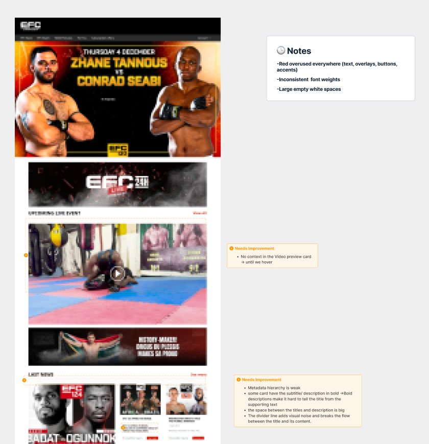
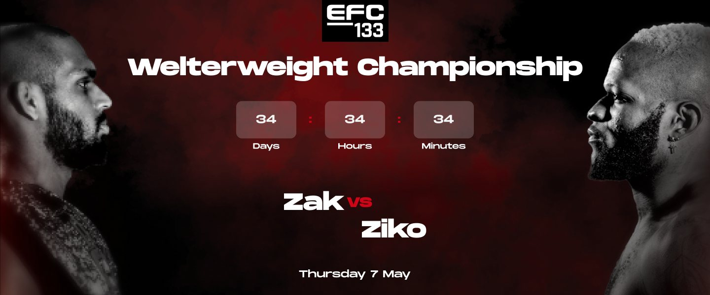
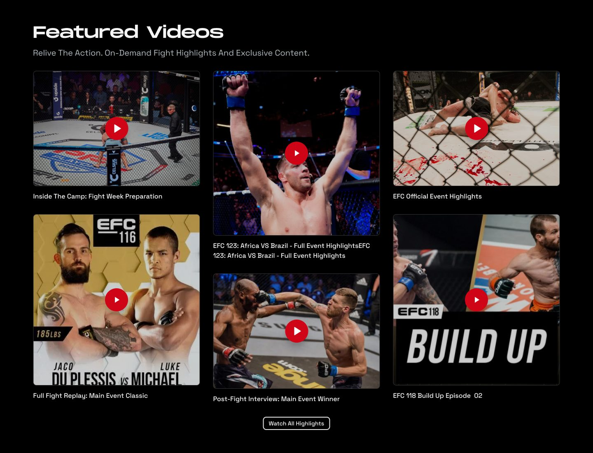

Loud, but hard to follow
Fans came to watch fights, catch up on news and find the next event. The platform had all of it, but red was everywhere, hierarchy was weak, and on phones many videos didn't even show what they were.
When everything shouts, nothing stands out.
I audited every key page first
Home, News, Article, EFC Watch, the video player, Podcasts and For You, plus their components. Each issue was ranked by priority.


Visual noise
Red was used for text, overlays, buttons and accents, so nothing stood out.
Weak hierarchy
Inconsistent font weights, and bold descriptions that looked like titles.
Hover-only cards
Video cards showed their title only on hover, so phone users couldn't tell what a video was.
Messy layouts
Inconsistent grid spacing, mixed card sizes and big empty gaps caused scroll fatigue.
Missing context
No breadcrumbs, no date, category or read time on articles, and no strong "Now Live" call to action.
Usability risks
A video carousel with overlapping text and unclear active states.
Calmer color, clearer structure


One focus. The next fight leads the page, with a countdown that builds anticipation.
Red as a signal. It appears only on "vs" and small accents, so it means something again.


No more guessing. Every video card shows its title without hovering.
Play is the only red. The action stands out against calm cards.
A rhythm, not a pile. A masonry grid with even gaps keeps scrolling easy.
What I delivered
A ranked list of issues across every key page.
Calmer color, a clear type scale, consistent cards, buttons and players.
How fans move from discovery to watching and subscribing.
Home, Events, Library, News and Fanzone, on desktop and mobile.
TakeawayStarting with an audit turned "make it look better" into a ranked list of problems, so every design decision had a reason.